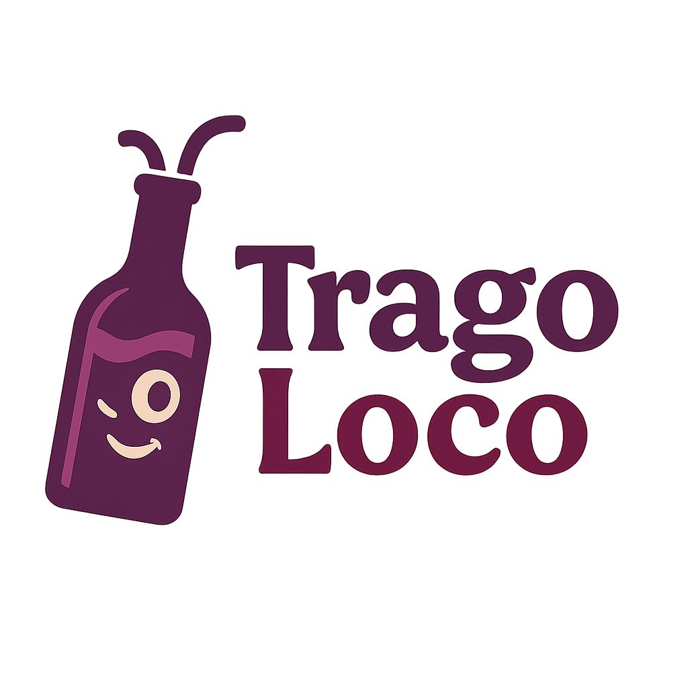

<footer class="mt-5 pt-5 pb-3 w-100" style="background: linear-gradient(to right, #000000, #333333, #000000);">
  <div class="container">
    <div class="row gy-4">
      <!-- Logo y descripción -->
      <div class="col-md-4">
        <a href="../Productos/Index.html" class="d-flex align-items-center mb-3 text-decoration-none">
          
          <span class="fs-3 ms-2" style="font-family: 'Pacifico', cursive; color: #ffffff;">Trago Loco</span>
        </a>
        <p style="color: #e0e0e0; font-size: 1rem;">
          Explora sabores únicos con tecnología y tradición.<br />
          La mejor selección de licores premium, directo a tu hogar.
        </p>
      </div>

      <!-- Enlaces -->
      <div class="col-md-4">
        <h5 class="mb-3" style="color: #ffffff;">Enlaces</h5>
        <ul class="list-unstyled">
          <li><a href="../Home/Index.html" class="footer-link">Inicio</a></li>
          <li><a href="../Cuenta/Login.html" class="footer-link">Login</a></li>
          <li><a href="../Cuenta/Registro.html" class="footer-link">Registrarse</a></li>
          <li><a href="../Informacion/NuestraHistoria.html" class="footer-link">Nuestra Historia</a></li>
          <li><a href="../Informacion/Contactanos.html" class="footer-link">Contáctanos</a></li>
          <li><a href="../Informacion/ConsumoResponsable.html" class="footer-link">Consumo Responsable</a></li>
        </ul>
      </div>

      <!-- Redes sociales -->
      <div class="col-md-4">
        <h5 class="mb-3" style="color: #ffffff;">Síguenos</h5>
        <div class="d-flex gap-4 fs-4">
          <a href="#" class="social-icon" aria-label="Facebook"><i class="bi bi-facebook"></i></a>
          <a href="#" class="social-icon" aria-label="Instagram"><i class="bi bi-instagram"></i></a>
          <a href="#" class="social-icon" aria-label="Twitter"><i class="bi bi-twitter"></i></a>
          <a href="#" class="social-icon" aria-label="WhatsApp"><i class="bi bi-whatsapp"></i></a>
        </div>
      </div>
    </div>

    <hr class="border-light mt-4" />
    <p class="text-center mb-0" style="font-size: 0.9rem; color: #cccccc;">
      &copy; 2025 <strong>Trago Loco</strong>. Todos los derechos reservados. |
      Desarrollado con ❤️ y tecnología.
    </p>
  </div>
</footer>

<style>
  /* Links blanco con hover gris claro */
  .footer-link {
    color: #ffffff;
    text-decoration: none;
    transition: color 0.3s ease;
    font-weight: 500;
  }
  .footer-link:hover,
  .footer-link:focus {
    color: #cccccc;
    text-decoration: underline;
    outline: none;
  }

  /* Íconos sociales en blanco con hover gris claro */
  .social-icon {
    color: #ffffff;
    transition: color 0.3s ease;
  }
  .social-icon:hover,
  .social-icon:focus {
    color: #cccccc;
    text-decoration: none;
    outline: none;
  }

  /* Línea separadora blanca suave */
  .border-light {
    border-color: #dddddd !important;
  }
</style>

<!-- Bootstrap Icons -->
<link href="https://cdn.jsdelivr.net/npm/bootstrap-icons@1.10.5/font/bootstrap-icons.css" rel="stylesheet" />
